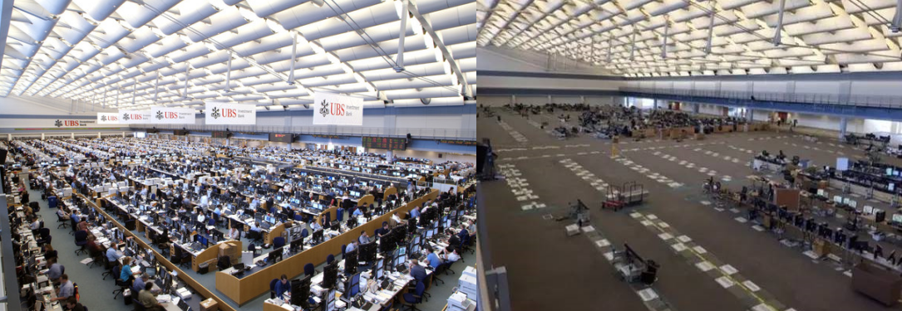
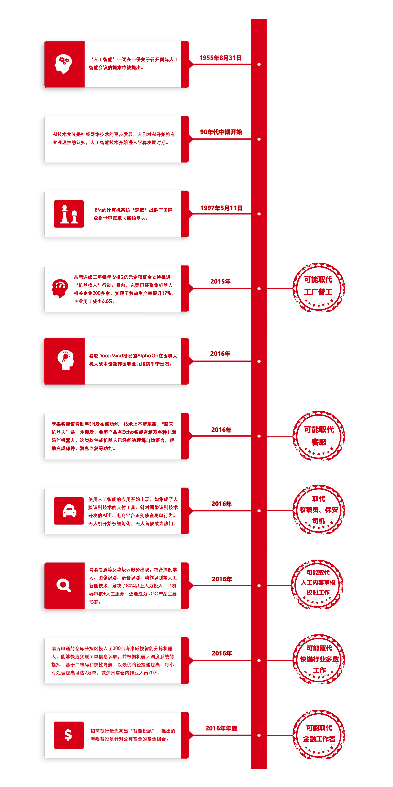

记者：泡泡糖 | 2018年1月1日
虽然阿法巴的试运营暂时还未导致司机的下岗，但是机器换人运动下，许多工厂员工已逐渐离开原有岗位，远在华尔街的金融精英们也被迫下岗。人工智能浪潮下，中国做好准备了吗？
2017年，伦敦当地时间10月18日，谷歌深度学习团队宣布AlphaZero研制成功，有关论文登上世界级顶尖科学杂志《科学》。实现自我学习功能的AlphaZero（即阿尔法元），意味着人工智能已经可以摆脱人类经验。
阿尔法元的诞生及运用加深了人们失业的焦虑。实际上，人工智能引发的失业在2015年已初见端倪，自动化生产将重复性高的工作替换，以制造业为主的发展中国家不得不直面大量工人下岗的问题，毫无缓冲期。
而根据国家制造强国建设战略咨询委员会发布的机器人产业“十三五”发展规划显示，到2020年，我国工业机器人年销量将达到15万台，保有量达到80万台；到2025年，工业机器人年销量将达26万台，保有量达180万台。到“十三五”末，我国机器人产业集群产值有望突破千亿元。
在中国成为工业机器人最大市场的同时，中国就业问题逐渐显露
机器人上岗，工人下岗
2016年5月，昆山市的富士康苹果代工厂又完成了新一轮机器换人行动，一次性换下6万个员工，只有5万人留了下来，这还没有排除富士康昆山工厂下一次机器换人安排的可能性。
富士康的行动是得到昆山市政府支持的。从2015开始，昆山市就开始改变增长战略，尝试通过用机器人取代工人和鼓励创业加速增长。
2016年，昆山市正式下发《关于加快昆山市机器人及智能制造产业发展的若干政策意见》，大力推进该市机器人及智能制造产业发展，加快形成经济增长和产业竞争新优势。《意见》加大财政支持力度。对设备投资额100万元以上（含）、500万元以下（不含）的“机器换人”及自动化设备项目，按项目设备投资额的10%给予补助。对采购使用本地产工业机器人及自动化设备的企业，单个项目最高补助1500万元。对认定为国家级、省级示范智能工厂、示范智能车间、智能制造项目的企业，分别给予300万元、100万元一次性奖励。鼓励企业生产制造适应市场需要的机器人、高端制造领域技术装备及大型自动化成套装备。
同时，《意见》明确了金融、土地、厂房等生产要素的扶持政策。在昆山组建或利用现有国有融资租赁公司，与苏州国开行建立统筹统贷机制承接低成本资金，专门用于该市企业的“机器换人”设备融资租赁业务，实现租户企业低成本、低门槛开展“机器换人”。
昆山市政府表示，通过引入机器人，富士康将昆山工厂的工人数量从11万减少到5万，成功降低了劳动力成本，更多公司可能跟随其脚步。昆山共有4800家台湾企业，占其GDP的60%以上，如果其自动化计划进展顺利，可能迫使250万人失业。
除了昆山，各省各市相继出台有关扶持政策，均将机器人的使用视为制造业的转型升级。例如，2017年上半年，广州市政府办公厅发布《关于推动工业机器人及智能装备产业发展的实施意见》。《意见》表示，到2020年，全市80%以上的制造业企业应用工业机器人及智能装备，同时也进一步明确采购或租赁制造业企业采购或租赁机器人的相关补贴。
但是，没有一个政府给出安置下岗工人的方案。
根据中国国家统计局显示，2002年—2017年，我国的失业率保持在4%左右。国际货币基金组织IMF的一份报告也指出，从过去的失业率调查上看，中国经济放缓并未影响就业状况。但是，这种调查忽略了影响就业的一些因素。
接受了调查的经济学家们认为，中国失业率调查不能反映中国的经济状况，因为调查只覆盖了城镇工人，而忽略了大约2.7亿居住在城市的农民工以及大量农村就业人口。同时，失业的农民工回到了农村，不在城镇登记失业率的统计范围内。中国实际失业率可能比4%要高。
冲击下的精英群体
2017年12月，由日本经济新闻和英国金融时报合作的研究调查显示：全部 820 种职业、2,069 项业务（工作）中，34%（710 项工作）比重的工作可被机器人替代。
在中国，人工智能对高端职业的冲击尚未显现，但在金融科技发达的美国，华尔街上的金融精英们已经感受到人工智能的威胁。根据《金融时报》报道，在2000年，纽约证券交易所的场内交易者超过5500名，而现在则不到400名。剩余的交易者中，有许多人只是以兼职形式工作。大部分交易型工作岗位已经由运行交易算法的服务器取代。相比之下，2001年熙熙攘攘的纽交所如今人去楼空。
随着蚂蚁金服、招商金融等智能金融服务的发展，中国很有可能遭遇华尔街同样的命运。

（2008以前和2016年对比图）
金融服务咨询公司Opimas2017年报告中提到，到2025年，人工智能技术在全球范围内将会减少资本市场就业的数字高达23万，金融机构的成本将降低28个百分点。“交易部门已经不复存在。” 艾特集团公司高级分析师大卫威斯说道。同时，调查也显示华尔街的这些金融精英们下一步倾向往亚洲寻找新的工作机会。
伴随于此的是，人工智能创造新岗位的速度远低于消灭岗位的速度。
2017年，美国经济学者Acemoglu 和 Restrepo建立了模型以分析机器人和工人在生产过程不同任务中的竞争。作者对地方不同产业中机器人使用量进行计算，估计机器人对地方劳动力市场的净效应，发现地区机器人使用与当地就业之间存在极强关系。1990-2007年间，相对于其他地区，使用机器人的地区工资和就业均出现显著下降，每千人增加一个机器人会导致就业/总人口比率下降0.37个百分点，地方工资水平下降0.73%个百分点，等价于每个机器人带来6.2个就业岗位的流失。
面临危机的行业
根据AI技术的发展，可知以下这些职业有较大可能被取代。

这一次冲击或许更严重
比起前几次产业革命，这次技术革新从内容到影响上和之前有很大不同，自动化的冲击涉及面更广。 一方面，两个世纪前，并非所有行业受到影响，但如今各行各业都在使用计算机，新兴的高科技行业与之前相比，劳动力密集程度降低了。另一方面，农业向工业的转移往往需时数十年，而部署软件则快得多。这些区别无疑给大众带来了对失业潮更深的焦虑。
工业革命出现以来，人类对技术变革导致大规模失业的恐惧总是反复出现。经济学家詹姆斯·贝森预言未来将出现“艰难过渡”，而非“历史剧变”。虽然众说纷纭，但是我们可以肯定的是，面对AI带来的失业潮，企业和政府需要迅速做出反应，创造条件方便就业者学习新技能并按需转换工作。万一人工智能的冲击将比乐观主义者的估计更迅猛、更剧烈，这一方法将是最佳的防御。